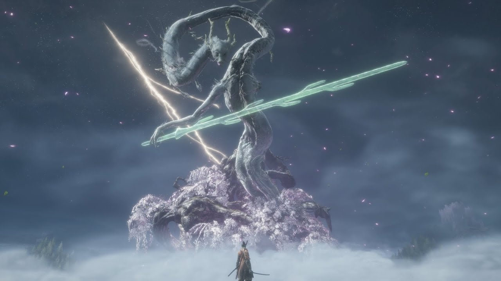
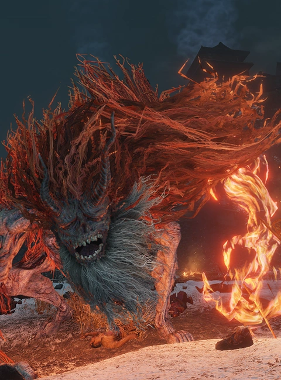

Isshin

This men is a menace to society this is a sword game not gun game. When you get him to phase 2 he will say"How my blood boils! Face me, Sekiro!" and then procced to whip out a gun and a spear. The spear have the AOE of 1/6 of the map and if you cannot dodge it that is 3/4 of your hp gone. After hitting you with the spear your posture level will already be red and just when you think his attack spree is done he will pull out the gun and start to shoot you and when you die to it he will say hEsitATioN iS deFEat like i am the guy who pull out the gun in a sword game.
Divine Dragon
This is one of the weakest boss in the game. As long as you can hook away you can beat him no problem
Demon of Hatred
This will be a pretty hard boss but there is a way for it to fall down a cliff and just due.